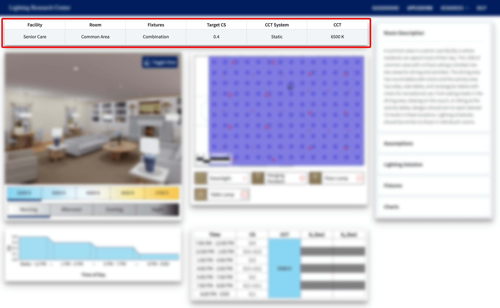
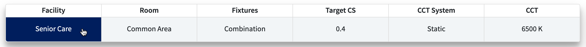
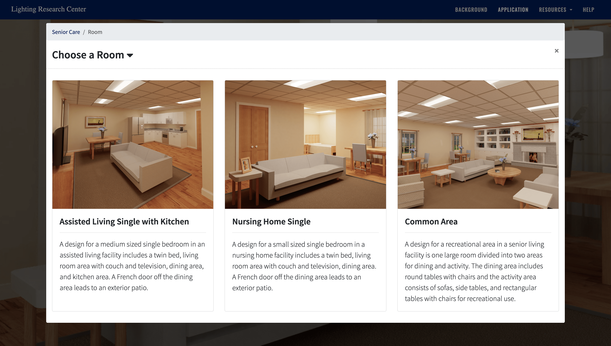
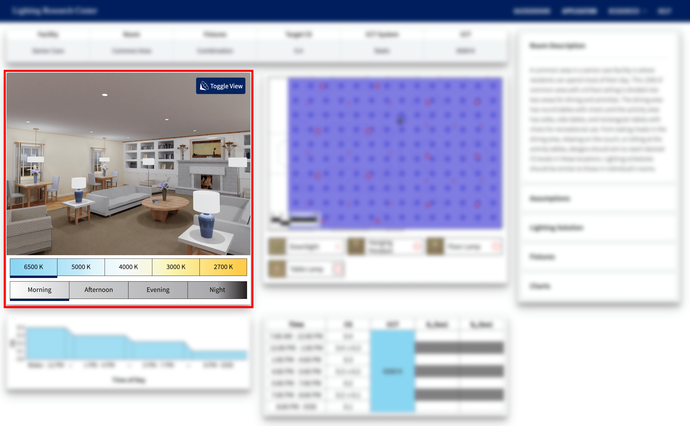
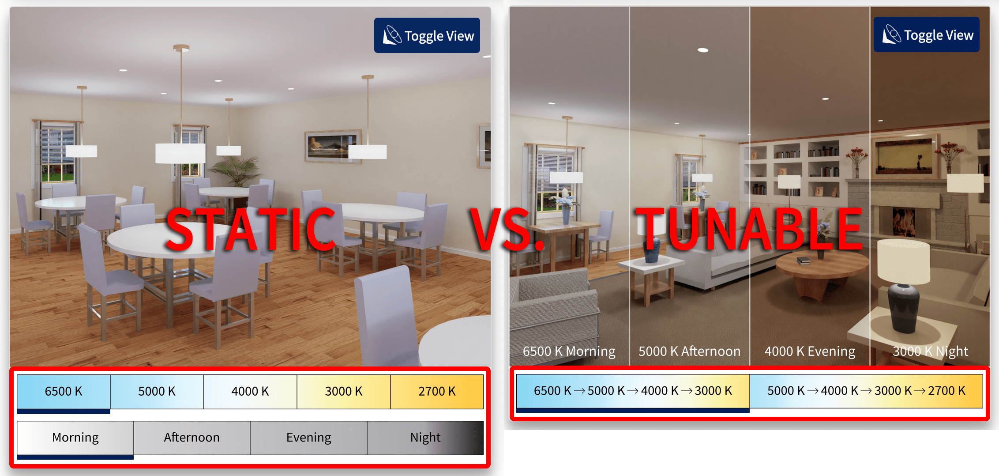
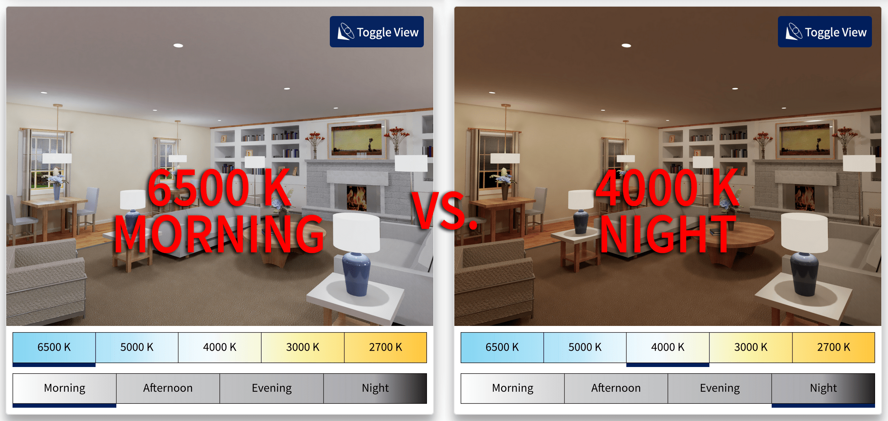
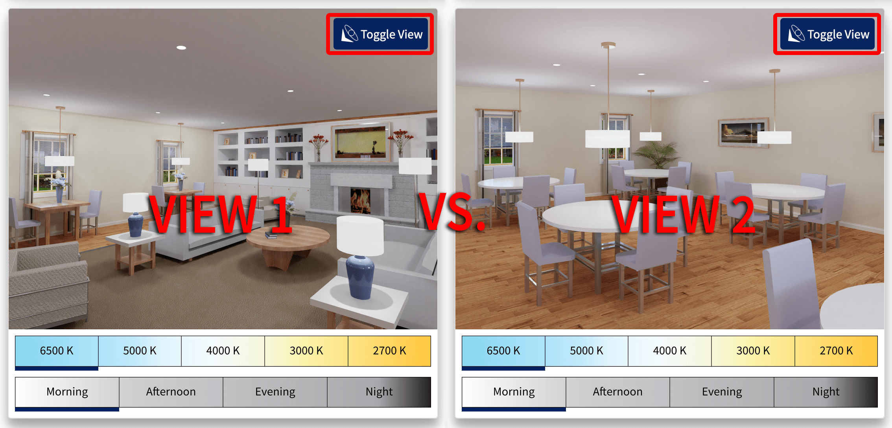

The help menu exists in order to help the user learn more about how to most effectively use this website. This specific help menu is targeted at specifically the application portion of the healthy buildings website. If you need help regarding the background portion of the healthy buildings website, or simply want to learn more about the fundamentals of circadian lighting, click here to navigate to the background page, and then click "help" in the top navigation bar again, to access the background page's respective help menu.
Selection Process
When first arriving on the application page you will be met with the Designing In a New Light title, a short description, and the begin button. Clicking the begin button will initiate you into the selection process.
Once you begin the selection process you will be tasked with choosing a single selection from the six different categories. In order, the categories are Facility > Room > Fixtures > Target CS > CCT System > CCT. Each selection is represented by a card with an image and a description, going into more detail about that selection and why you may want to select it. To choose a selection simply click anywhere on the card and you will be automatically brought to the next selection category.
You may also click the modal title (i.e. "Choose a Room"), to activate a drop down that will give more information on how that specific category can affect the lighting.
The selection process modal has a breadcrumb trail along the top, similiar to one you will you will see once you have finished the selection process. The breadcrumb trail allows you to see all the selections you've chosen thus far in the selection process. You may also click on of any of the selections you've made to jump back to that point in the selection process. Click here, or select the Breadcrumb tab to learn more about the breadcrumb trail.
Once you've chosen a selection for all six categories you will be presented with a page that looks similiar to the one below. Use the image below as a guide on how to use the help menu for each of the labelled portions on the image.
Breadcrumb
The breadcrumb or breadcrumb trail is the horizontal bar at the top of the application page, post selection process, that serves to remind you of the choices you made during the selection process, and allows you to change your selections post the initial selection process.

The breadcrumb trail is divided into six equal sections, one for every selection you made, and are labelled accordingly. To change one of your selections, simply click on that selection (i.e. 'Senior Care'), not the label (i.e. 'Facility'). You will see the selection turn blue when you hover your cursor over that selection.

Once you click on the selection you wish to change, you will be reentered into the selection process starting at that point. You will still need to complete the entirety of the selection process after that point, as each set of selections following a given selection change based on that selection.

Render
The render gives you an idea of how your unique selections of facility, room, fixture types, etc. might look in real 3D space. It's useful to know not only if the space is providing the occupants enough circadian stimulus, but also how the space looks aesthetically; this is what the render aims to achieve. Note that the render is only a single layout designed by an artist here at the LRC, although, many different combinations of furniture, fixture, and occupant layouts are possible to achieve the correct CS. This render is only a single example.

Below the render you will see either one or two rows of buttons depending on which CCT system you chose, static or tunable. Static renders will have two rows of buttons, the top for selecting which specific CCT you wish to select (this is the same as choosing a CCT in the selection process), and the bottom for selecting which time of day you wish to show in the render. There is no time of day category in the selection process as it will only change how the render appears on your screen; the CS chart and CS graph will always provide information for the different times of day, regardless of what you have selected. Tunable renders will show how the lighting changes in the space over the different times of day, thus there is no need for time of day buttons. Consequently there are only CCT buttons. The CCT buttons for the tunable renders are labelled by the individual CCT's at each time of day (i.e. "6500 K -> 5000 K -> 4000 K -> 3000 K" indicates the fixtures will have a CCT of 6500 K in the morning, 5000 K in the afternoon, 4000 K in the evening, and 3000 K at night).

The blue line underneath the CCT and time of day buttons indicates which of the options you have selected. Immediately following the selection process, the underlined CCT button will be the CCT you chose during the selection process and the left most time of day button will by default be selected. Simply click a different button to select that CCT or time of day.

On some renders you may see a blue button in the top right corner labelled Toggle View. This button indicates that there are multiple different angles of the same space. Clicking this button will toggle between the views on the render as well as the plan. Click here, or select the Plan tab to learn more about the reflected ceiling plan.

Designing in a New Light
Welcome to the Healthy Pattern's Application page! Learn the framework for developing circadian lighting designs. Circadian lighting schedules differ depending on user types, so navigate through the facility and room options to explore these variations. Lighting designs are given for multiple fixture types as well as CCT values. Providing multiple solutions allows for the decision to be yours to choose which parameters fit your design best. For more information about lighting and circadian rhythms, refer to the background page.